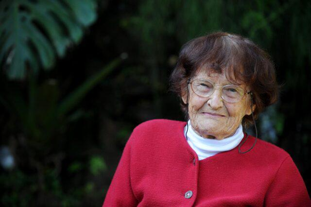

O que é Agroecologia?
A Agroecologia, entre diversas variáveis, pode ser encarada como uma ciência, pois abrange diversas áreas do conhecimento em seus estudos e aplicações como a Ecologia, a Economia, Gestão pública espacial, sociologia, geografia, política, biologia, entre outros.
Ela é contrária ao agronegócio e entre suas técnicas utiliza de sementes crioulas, produção de composto orgânico, apoio ao agricultor familiar, indígena e quilombola, agregando tanto os saberes tradicionais quanto os técnicos com inclusão social, etc.
Também vale pontuar que ela tem um alto potencial interdisciplinar, podendo ser utilizada dentro do ambiente escolar para ensino didático e como forma de Educação Ambiental (pois reflete uma lógica de que a floresta, ou “agrofloresta”, com a interferência humana, é a principal inspiração de como devemos lidar com a natureza, respeitando os seus limites, tempo e necessidades) como também pode ser usada como geração de renda para pequenos agricultores familiares.

Altieri e a agroecologia: https://arca.furg.br/images/stories/producao/agroecologia_short_port.pdf
Segundo eCycle: https://www.ecycle.com.br/agroecologia/